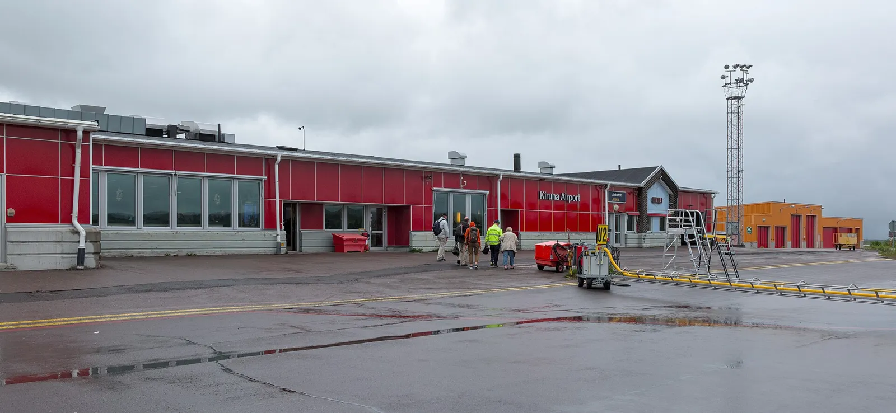
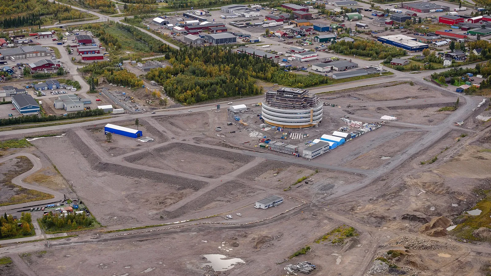
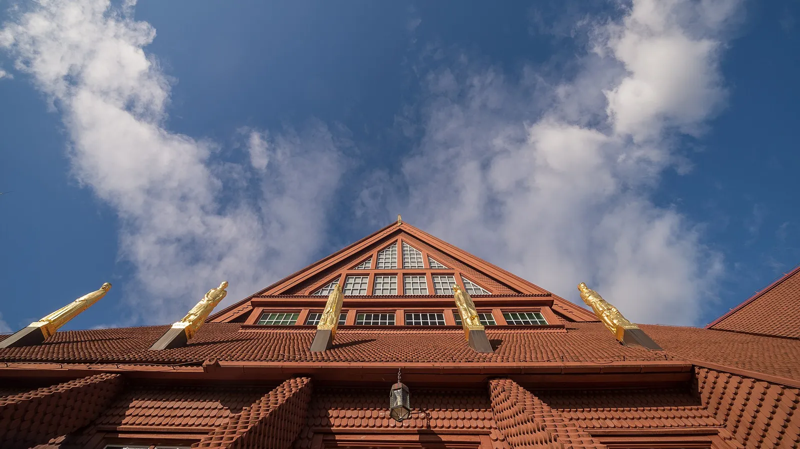
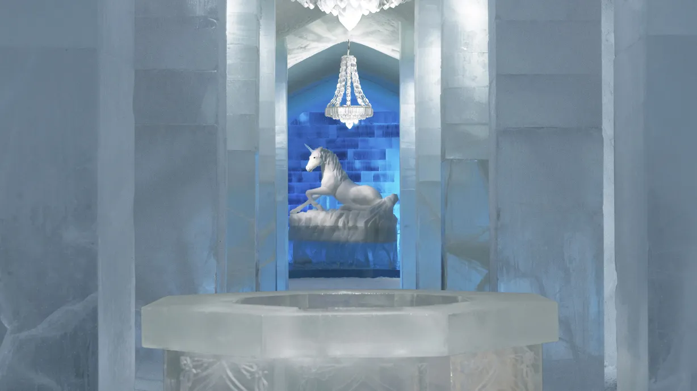
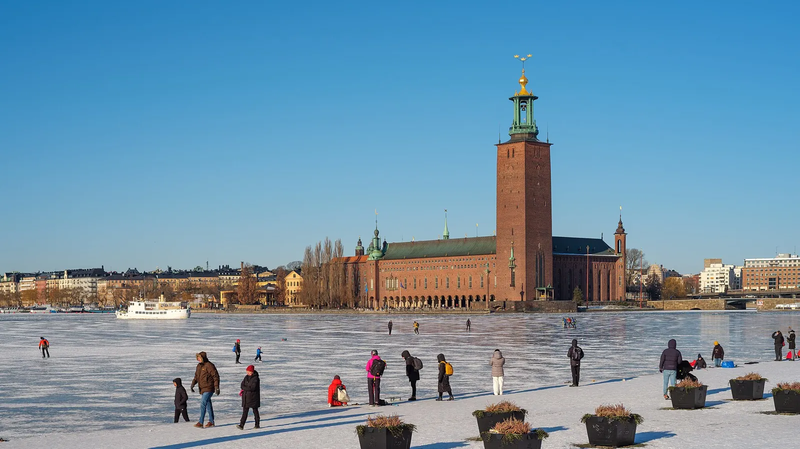

A festive week in the Arctic. Four nights in a cabin hotel in Kiruna, 145 km north of the Arctic Circle, with a snowmobile ride to cut your Christmas tree, Santa's visit on Christmas Eve, the early Julotta church service, snowshoes, a husky safari and lunch in a Sami tent, then two nights in winter Stockholm. The New Year version swaps Christmas for a Sami reindeer village, a snowmobile ride to the ICEHOTEL and a New Year's Eve gala dinner. Kiruna Church, voted Sweden's most beautiful building, was moved in one piece to the new town centre in 2025 because the iron mine is undermining the old town.
See it for yourself
Photos from the journey







Day by day, in short
Daily travel brief
Distances are by road for the whole day. The full plan with timings comes with your detailed itinerary.
-
1
Arrive in Kiruna
- Dinner at the hotel: look up after dinner: the northern lights are often visible from the hotel on clear nights.
- Most flights connect via Stockholm Arlanda; allow at least 2 hours to change.
-
2
Christmas Eve: snowmobile, the tree and Santa
- Snowmobile safari to cut the Christmas tree: use the overalls, boots and mittens provided; layers underneath.
- New Year version: a Sami reindeer village with a ride on a reindeer sled and lunch in a tepee.
-
3
Christmas Day: Julotta and snowshoes
- Julotta in Kiruna Church: a service, not a show: dress warmly and modestly and stay quiet.
- New Year version: a snowmobile ride to the ICEHOTEL with a wilderness lunch, and the New Year's Eve gala dinner.
-
4
Husky sled safari
- New Year version: a free morning for the LKAB iron-ore mine tour or the Esrange space centre, and an evening tracked-vehicle ride up Mount Luossavaara to look for the northern lights.
-
5
The ICEHOTEL, then fly to Stockholm
- ICEHOTEL, Jukkasjärvi: the ice building opens from about mid-December; ICEHOTEL 365 is open all year.
- Stockholm is milder, about 0°C, but dark by 15:00.
-
6
Winter Stockholm by coach and boat
Royal Palace Stockholm Vasa Museum
- Indian vegetarian restaurants are easy to find near Central Station.
-
7
Fly home from Stockholm
- Arlanda Express to the airport: be at the airport 3 hours before an international flight; winter weather can slow things.
- Pack thermal clothing in hand luggage for any delay.
Local know-how
Travel hacks from our desk
Arctic clothing
Temperatures of minus 15 to minus 30°C are normal. Your hotel lends thermal overalls, boots, mittens and balaclavas for the activities; bring thermal underwear, wool socks and a warm hat.
Polar night
From about 10 December to 3 January the sun does not rise in Kiruna. There is about 4 hours of blue twilight around midday.
Snowmobiles
Drivers need a valid car driving licence (with an International Driving Permit). Never drink before driving, and keep the distance your guide sets.
Hotel deposit
Use a credit card for the deposit or pre-authorisation at check-in, never a forex or debit card. Forex cards cannot hold funds, many hotels refuse them, and a credit-card hold is released faster.
Cards and cash
On card machines, always choose to pay in the local currency (euros in Finland, Swedish, Norwegian and Danish kronor elsewhere), never in INR. Scandinavia is almost cashless: cards and phone payments work everywhere, even for toilets and market stalls. You need little or no cash.
Pickpockets
Busy stations, trams and squares are pickpocket hotspots. Keep passports in the hotel safe, carry a copy, and wear your bag in front in crowds.
Plugs, water and meal times
Plugs are the two round-pin type C and F at 230 volts (Switzerland uses type J; a type C plug fits). Tap water is safe to drink. Lunch is about 12:00 to 14:00 and dinner from about 18:30.
When to go
Best time to visit for this journey
23 December (Christmas) or 29 December (New Year) arrival.
This tour runs over Christmas and New Year. For northern lights without the festive dates, travel from late September to March.
The package
What's included
Included
- 4 nights in Kiruna with breakfast and dinner
- 2 nights in Stockholm with breakfast
- Airport transfers in Kiruna
- Snowmobile safari, snowshoe walk and husky safari with lunch (Christmas)
- Sami reindeer visit, snowmobile to the ICEHOTEL, gala dinner and northern lights ride (New Year)
- Thermal clothing for activities
- Stockholm coach and boat tour
- 24/7 support from Blue Diamond Voyage
Not included
- International and domestic flights
- Schengen visa
- ICEHOTEL entry
- Mine and space centre tours
- Lunches in Stockholm
- Travel insurance
The detailed itinerary
Some journeys are planned. Ours are crafted.
The full 7-day plan is ready: hour-by-hour timings, drive times, temple dress codes, food for your diet and a route map for every day. Tell us your dates and your city, and we'll send it to you on WhatsApp, shaped around you.
- Hour-by-hour timings
- A route map for every day
- Hotel and room details
- Visa and entry steps
- Vegetarian and Jain dining
24/7 travel desk+91 97148 59797+91 98242 21400
Photo and map credits
- Kiruna Airport: Trougnouf (Benoit Brummer), CC BY 4.0, via Wikimedia Commons
- Kiruna: Arild Vågen, CC BY-SA 4.0, via Wikimedia Commons
- Kiruna Church: Arild Vågen, CC BY-SA 4.0, via Wikimedia Commons
- Kiruna: Arild Vågen, CC BY-SA 4.0, via Wikimedia Commons
- ICEHOTEL: Lars Thulin, CC BY-SA 4.0, via Wikimedia Commons
- Stockholm City Hall: ArildV, CC BY-SA 4.0, via Wikimedia Commons
- Stockholm Central: Arild Vågen, CC BY-SA 3.0, via Wikimedia Commons
- Maps: © OpenStreetMap contributors; road routes by OSRM.